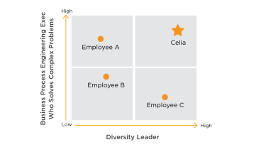
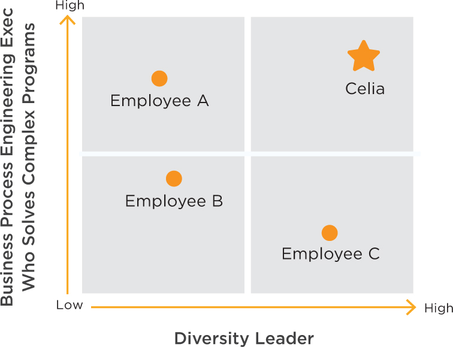

Let’s look at a number of positioning charts and positioning statements to see how they can work in tandem.
Figure 2.4
Celia, Manager of Business Process Engineering
>Goal: Promotion as Business Process Engineering Executive
I recommend charting your specialty and key differentiator on a two-by-two matrix to see if you can find the right combination to give you a positioning advantage over your competitors. Put your specialty on the vertical y axis and put your key differentiation on the horizontal x axis. Who are your competitors? They might be fellow job seekers, other entrepreneurs seeking funding or those who are in line for the promotion you want. Your goal is to position yourself in the upper right-hand quadrant—the most advantaged position.
Here is Celia’s positioning in a visualization.
Figure 2.5
 
By adding Diversity Leader to her positioning chart, Celia is differentiating herself from other business process engineering experts in the company. Look for areas that help to set you apart but that you may currently discount. Take a fresh look at everything you have done or could do, then brainstorm how this expertise or experience could be of value to your company given current trends and pain points. You may surprise yourself with a unique way of differentiating your value.
Figure 2.6
Goal: Promotion and recognition in existing company, or new job opportunity
Marcus’s original positioning as a VP of Engineering with no other clarification does not differentiate him among other engineering executives. By adding “innovation expert” and talking about his innovation culture techniques and engineering talent management track record, he rises above the crowd and presents a compelling story. He is now positioned as a technologist skilled in human resources and culture—a rare combination.
If you seem to be a plain-vanilla manager, find some area or management practice in which you can excel. For example, can you be expert in a domain or skill area, a geographic area, a management technique or attribute, or an area of thought leadership? You may be able to leverage some capability or training from your past that just needs dusting off and repackaging. I had a client who had spent so many years in marketing that she forgot she had a degree in biology. By calling attention to her science education, we were able to position her credibly for a new job opportunity partnering with the company’s top scientists.
Figure 2.7
Goal: Get VC funding for start-up
Asha’s original positioning was solely as a CEO for a data analytics company. By adding the terms “cloud-based service,” “Big Data” and “visualizations,” she hit upon three keywords that made her and her company more interesting given current trends. In addition to being a technologist, she is positioning herself as an experienced start-up CEO who can sell a vision, scale and build a global company—all music to the ears of potential investors. She is painting a picture of how the company will be successful in marketing and operations.
Figure 2.8
Lee, Recent MBA Graduate
Goal: Find first job with new MBA degree
Lee’s key differentiation is combining software engineering leadership, his MBA training and his global experience and language capabilities. His ability to “provide immediate value” speaks to the needs of management consulting firms who need to get new consultants productive quickly. You may not have Lee’s résumé upon graduation from business school, but you can still market capabilities that employers seek. For instance, you can show project management experience through leading teams in your MBA program or doing something similar on a volunteer basis for an outside organization.
Goal: Recognition as Visionary in Open Source Software
We met Mike at the beginning of this chapter as a programmer who strategically positioned himself in new technology areas, that is, graphical web software. The positioning statement above shows how he is shifting his focus to open-source software and differentiating himself as a visionary leader who can execute.
Iteration is key to making your positioning statement crisp and compelling. If you change the target audience, the problem statement changes and, hence, the value proposition. Conversely, you may have a great value proposition but if it doesn’t match the audience’s needs, you need to find a new target audience that will value what you have to offer.
For product companies, the key is understanding the consumer. For those looking for a job, it is understanding the needs of the hiring manager. For the entrepreneur looking for funding, it is understanding the needs of investors. If you have a skill that is unique to you but no one is interested, it doesn’t matter that it is unique. You have to be relevant and unique.
◦Fill out the positioning statement for your most important audience.
◦Then, fill out the positioning statement again with a different audience. Note how the problem statement and value proposition change. See chapter 3 for a template to develop value messages by audience.
◦Visualize your positioning in a positioning chart (see Celia’s example in Figure 2.5) and place your competitors in the different quadrants. If the upper right-hand quadrant is crowded, you need to find positioning elements that will better differentiate you.
After watching the video above, enter values for one or more evidence fields: